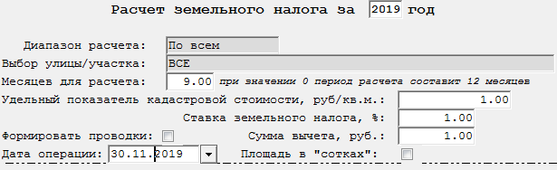
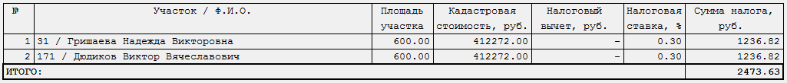

Бланк "Расчет земельного налога (неприватизированные участки)"
Данный бланк предназначен начисления земельного налога для неприватизированных участков (рис. 1).

Рис. 1. Бланк "Расчет земельного налога (неприватизированные участки)"Рассмотрим поля, доступные для заполнения:
-
Диапазон расчета - указывается, по кому формировать ведомость - По всем, По улице, По участку.
-
Выбор улицы/участка - указывается, по какой улице/участку начислить. Доступность выбора зависит от значения в поле Диапазон расчета.
-
Месяцев для расчета - указывается количество месяцев для расчета, отличное от 12.
-
Удельный показатель кадастровой стоимости, руб/кв.м. - указывается удельный показатель кадастровой стоимости одного квадратного метра площади участка в рублях.
-
Ставка земельного налога, % - указывается ставка земельного налога в процентах.
-
Сумма вычета, руб. - указывается сумма вычета (скидки) на земельный налог в рублях.
-
Площадь в сотках - данный признак устанавливается, если площадь участков была указана в сотках.
-
Формировать проводки - указывается, формировать ли проводки.
-
Дата операции - дата хозяйственной операции.
После заполнения полей, влияющих на расчет, необходимо пересчитать бланк.
Для этого нажмите кнопку
 на панели инструментов,
клавишу F9, или комбинацию клавиш Ctrl + Enter.
на панели инструментов,
клавишу F9, или комбинацию клавиш Ctrl + Enter.
После пересчета на экране отобразится таблица с суммами земельного налога для участков (рис. 2).

Рис. 2. Бланк "Расчет земельного налога (неприватизированные участки)" после пересчета